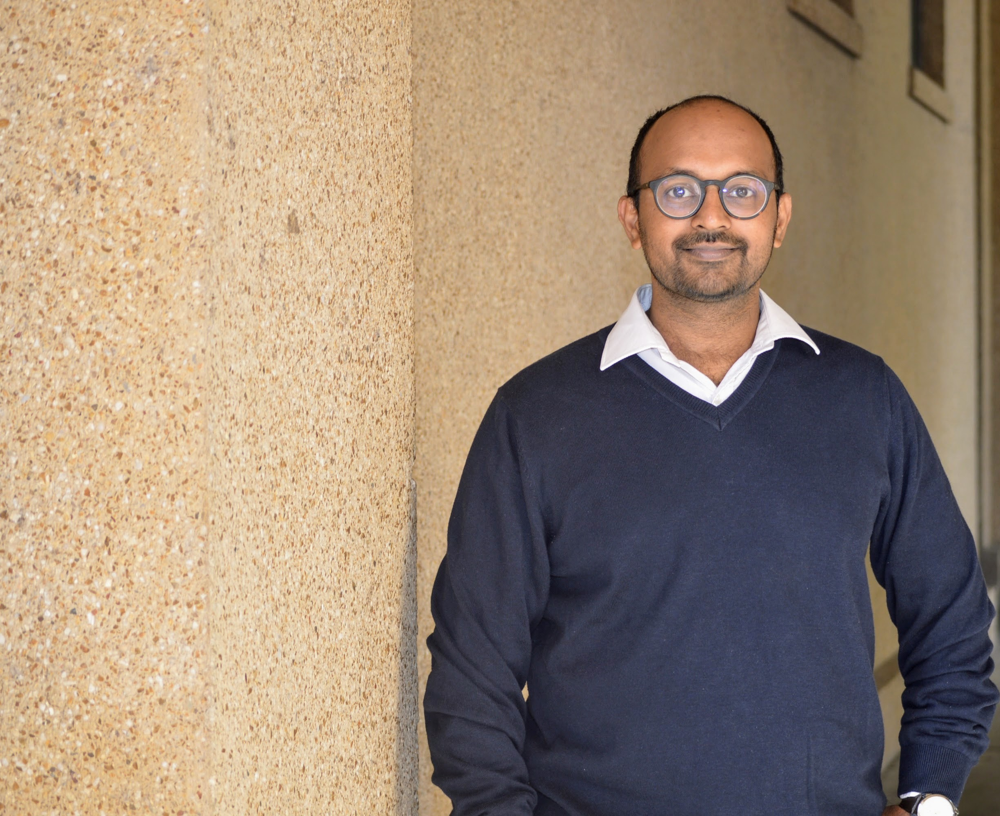

Nikhil Damodaran

Assistant Professor of Economics
School of Government and Public Policy
O. P. Jindal Global University
Email: ndamodaran@jgu.edu.in
Office: Cabin 6, T4 Academic Block,
OP Jindal Global University, Haryana, India.
I find governments fascinating. I use formal macroeconomic models to understand the implications of their actions on economic agents. I study sub-national governments more than national governments because the disaggregated picture looks way more interesting. I love placing these questions in their appropriate history and context.
Twitter | LinkedIn | Scholar
Research
Consumer Payment Choice and the Heterogeneous Impact of India's Demonetization
with Ayushi Bajaj
Journal of Economic Dynamics and Control, 2022
Fiscal Policy and Transmission: The Case of India's States
Paper
Slides [TBA: April 2023]
Is ChatGPT Smarter than a Student in Principles of Economics?
with Wayne Geerling, G Dirk Mateer and Jadrian Wooten
SSRN Version
Working Projects
Trade Transmission of Fiscal Policies in a Currency Union
Fiscal Policy, Farm Bills and the Intra-US Agrilcutral Trade
Teaching
Teaching statement
Courses Instructed
Econometrics II - Spring 2021, Spring 2022
Open Economy Macroeconomics (PG course) - Fall 2021
Macroeconomics II - Spring 2019, Spring 2020, Fall 2020, Fall 2021
Statistics II - Spring 2020, Spring 2021
Mathematical Methods for Economics I- Fall 2019, Fall 2020
Macroeconomics I - Fall 2018
International Trade - Spring 2019 and Fall 2018
Agricultural Price Analysis, Spring 2017
Courses Assisted
Principles of Economics, Spring 2015
EC 13: Econometric Methods I, Spring 2015
Principles of Macroeconomics, Spring 2014
General Writing
A little bit of theory for everyone, check out my substack, Jan 2023.
The Need for public in public policy, The Indian Express, 23 March 2021.
Inflation tax and the Burden of Public Debt , The
New Indian Express, 18
March 2021
Who pays for the wall? Farm Protests and the Budget, Indian Express, 17 February 2021.
Why is the government pushing farm laws despite so much protest?, The Pioneer, 11 February 2021
On Domestic currency denominated local government bonds, with (Shraavan Varma and Aarjav Nair), The New Indian Express, 7 February 2021
On the need for unconventional monetary policy to help local governments, Indian Express, 24 April 2020
Macroeconomic effects of the reverse migration due to COVID lockdown in India, Indian Express, 12 April 2020